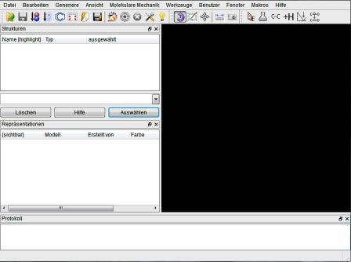
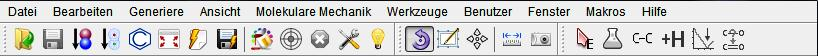

1. Wie ist Ballview aufgebaut

Der graphische Oberfläche von Ballview lässt sich in 5 Gebiete einteilen, die später im Detail erklärt werden. Oben befindet sich eine Leiste mit Menüeinträgen und Buttons. Auf der linken Seite darunter befinden sich 2 kleine Fenster. Einmal das Strukturfenster, das alle Atome des Moleküls beinhaltet und darunter das Repräsentationsfenster, das den Inhalt der Darstellung wiedergibt. Rechts davon befindet sich die 3D Ansicht des Moleküls und am unteren Rand finden wir das Protokollfenster, das Fehlermeldungen und Hinweise gibt.
